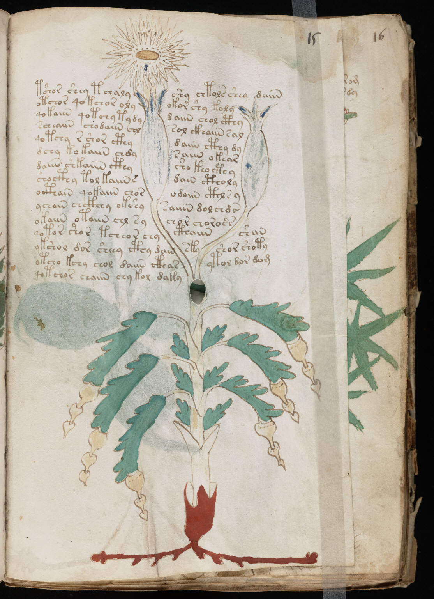

f15r
1tshor shey tchalyshy chtols sheydaiin2otchor qokchor olyokor shy koly3qokaiin qotchy tydydaiin chol cthy4scheaiin chodaiin chlsol ckhaiin sal5qotchy r shor cthydaiin cthy dy6dchy kokaiin chdysaiin okear7daiin shkaiin cthysho keocthy8shocthy tol kaiin sdain ctholy9octhain qokaiin chosodaiin cthl s y10ychain chckhhy okshysaiiin dolchds11okaiin otaiin chl sychor choross12qotor shor tcheor chycthaiinshan13ykshol dor sheey cthy dainskyshor shoty14otcho kchy chol daiin ctharytol dor dom15qotchor chaiin chy koldaky
